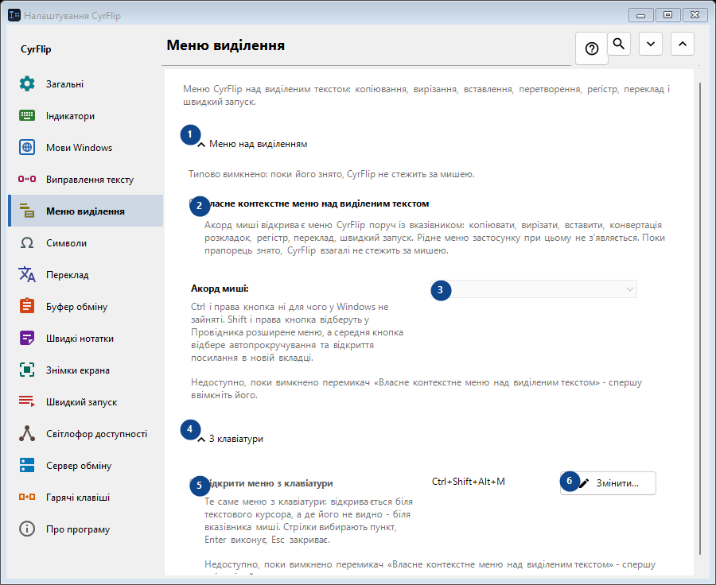
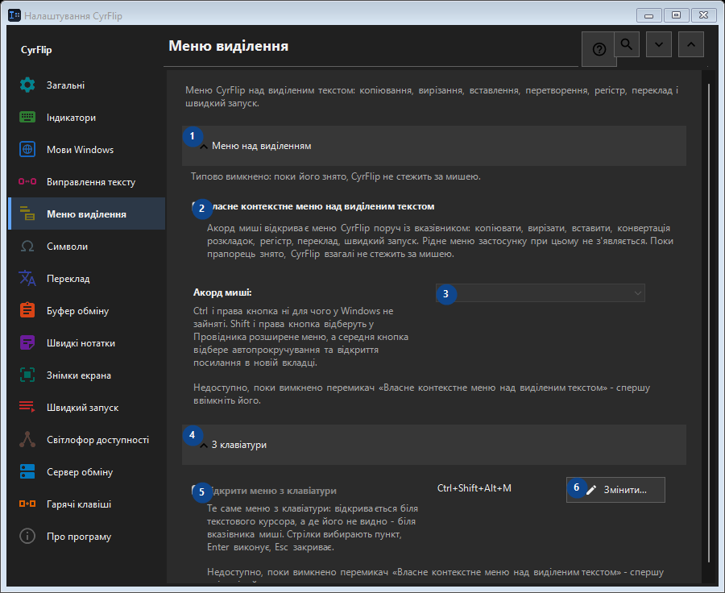

Меню виділення
Для чого це вікно
Меню CyrFlip над виділеним текстом: копіювання, вирізання, вставлення, перетворення, регістр, переклад і швидкий запуск.


Порядок дій
Налаштування застосовуються одразу. Обов’язкового порядку немає; користуйтеся групами нижче.
Елементи
1. Меню над виділенням
Скористайтеся командою, коли потрібна вказана дія. Прочитайте запит підтвердження перед згодою.
Ваші сполучення клавіш2. Власне контекстне меню над виділеним текстом
Акорд миші відкриває меню CyrFlip поруч із вказівником: копіювати, вирізати, вставити, конвертація розкладок, регістр, переклад, швидкий запуск. Рідне меню застосунку при цьому не з'являється. Поки прапорець знято, CyrFlip взагалі не стежить за мишею.
Ваші сполучення клавіш3. Акорд миші
Недоступно, поки вимкнено перемикач «Власне контекстне меню над виділеним текстом» - спершу ввімкніть його. Елемент зараз недоступний. Спочатку ввімкніть функцію або виберіть запис.
Ваші сполучення клавіш4. З клавіатури
Скористайтеся командою, коли потрібна вказана дія. Прочитайте запит підтвердження перед згодою.
Ваші сполучення клавіш5. Відкрити меню з клавіатури
Недоступно, поки вимкнено перемикач «Власне контекстне меню над виділеним текстом» - спершу ввімкніть його. Елемент зараз недоступний. Спочатку ввімкніть функцію або виберіть запис.
Ваші сполучення клавіш6. Змінити - Відкрити меню з клавіатури
Скористайтеся командою, коли потрібна вказана дія. Прочитайте запит підтвердження перед згодою.
Ваші сполучення клавіш